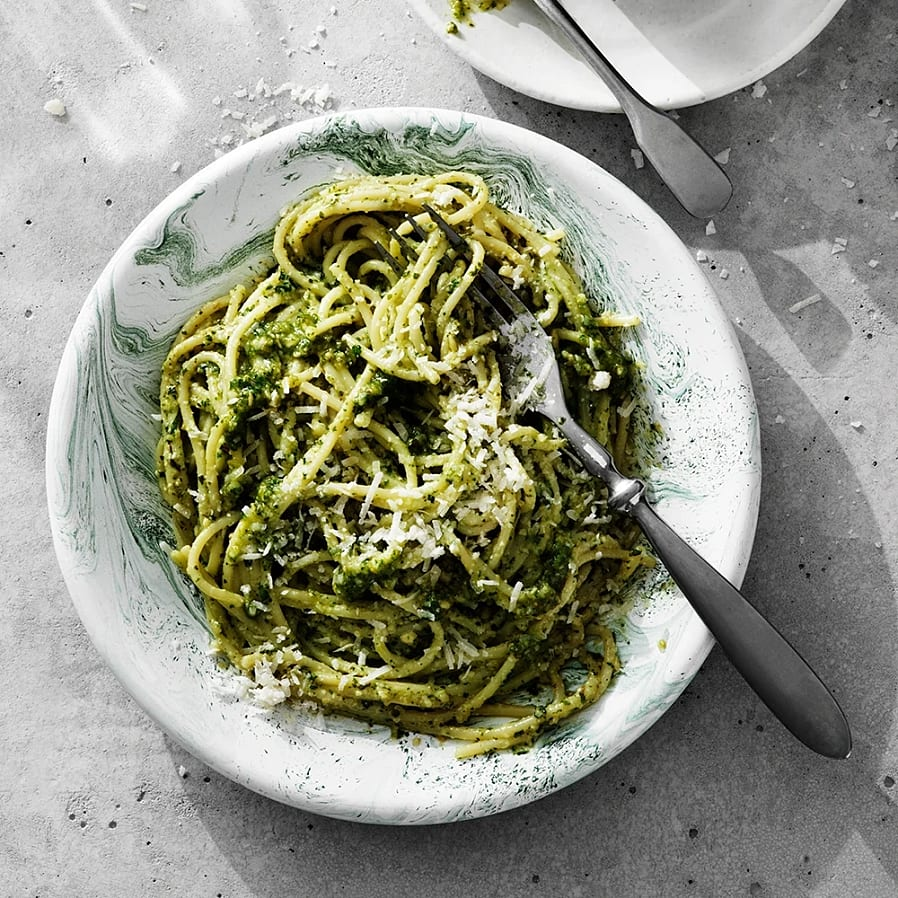

Pasta with pesto

Pasta a la pesto
This super simple and quick pesto with pasta will become a new favorite for
stressful days. You mix the good pesto of garlic, basil, cheese, nuts and oil
with the pasta, simply and so delicious.
Ingredients
- 1 - 2 cloves of garlic
- 1 pot of basil
- 1 dl freshly grated parmesan or other aged hard cheese
- 3/4 dl walnuts, pine nuts or sunflower seeds
- 1 krm salt
- 1 dl olive oil, sunflower oil or rapeseed oil
- 1 - 2 tbsp water
- black pepper
- 300 g spaghetti or string spaghetti
Do this
- Peel the garlic cloves. Scrape the leaves from the basil. Grate the cheese.
- Place garlic, basil, cheese, nuts and salt in a food processor. Process
until everything is finely divided. Everything can also be finely chopped
with a knife. Add the oil, a little at a time, while stirring or while the
machine is on. Stir in the water. Season with black pepper and possibly more
salt.
- Cook the pasta according to the instructions on the package and mix
it with the pesto.
- For serving: Feel free to top the pesto pasta with a little grated
Parmesan cheese.